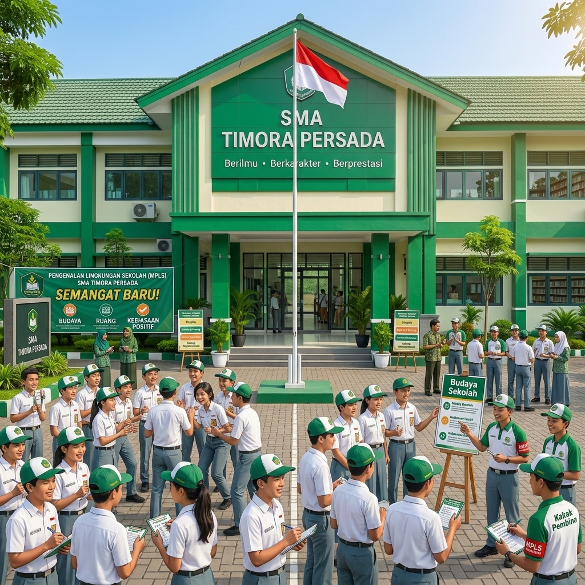
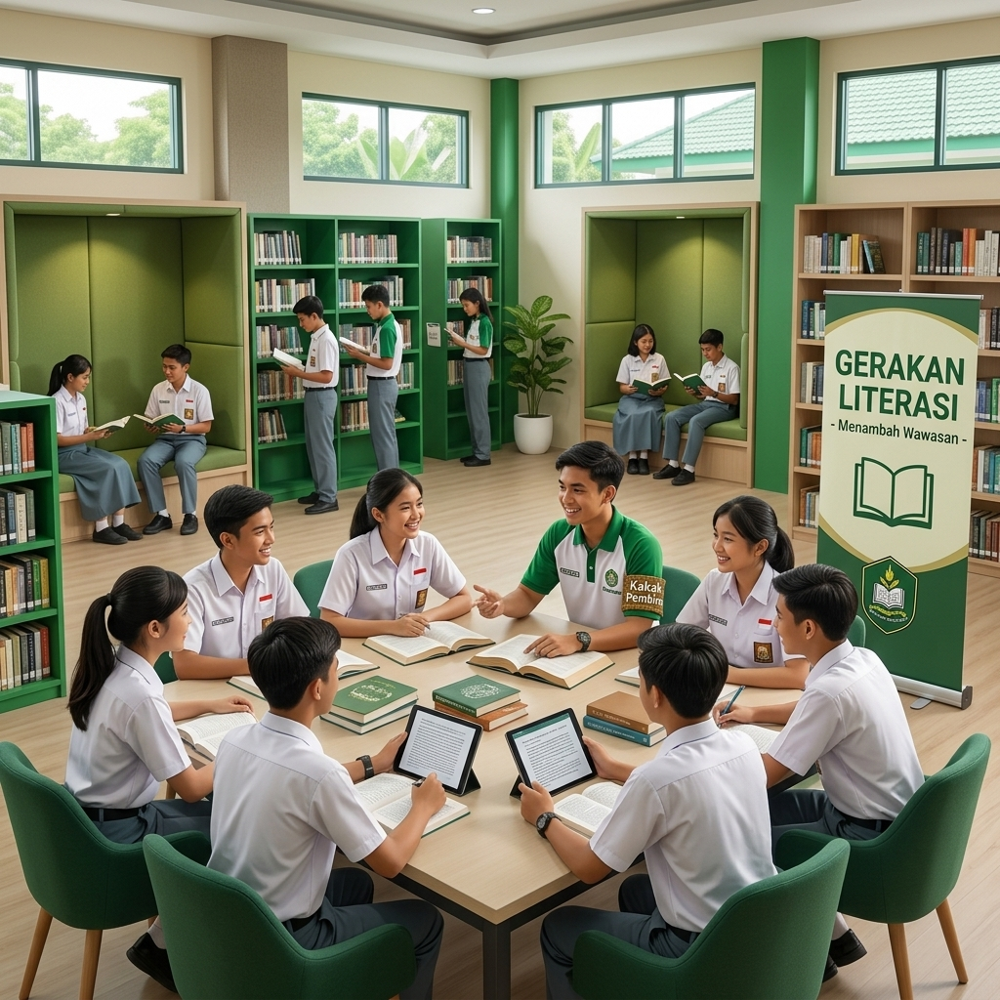
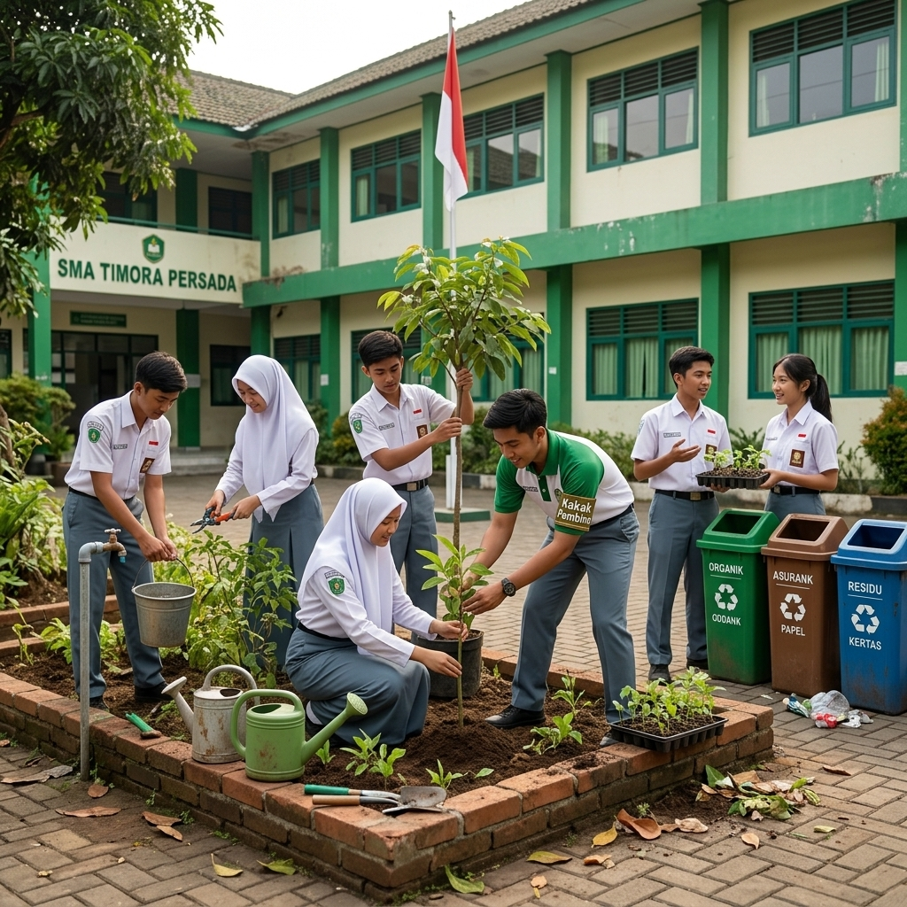
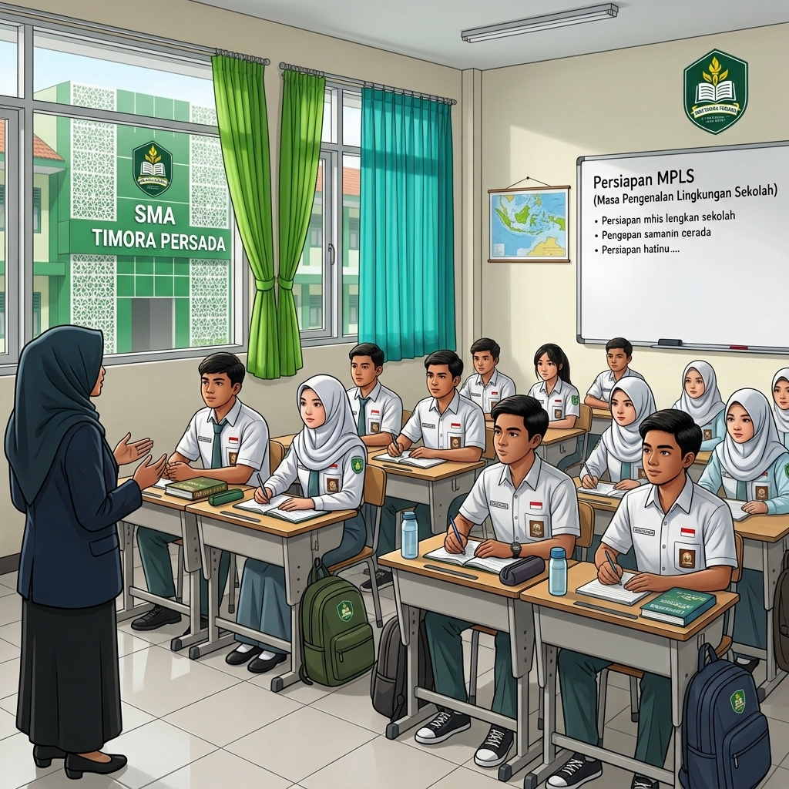
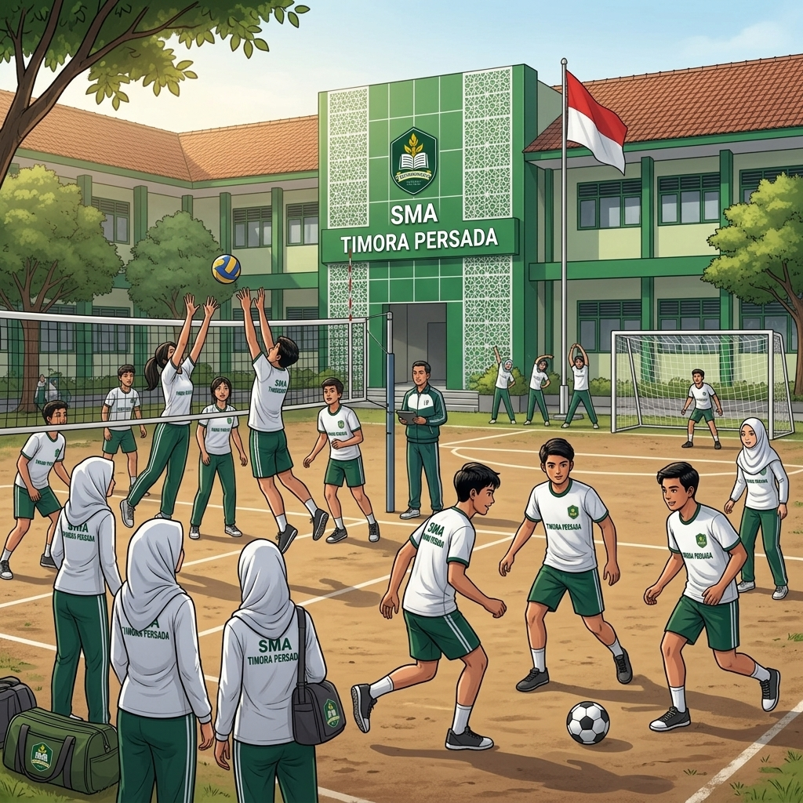
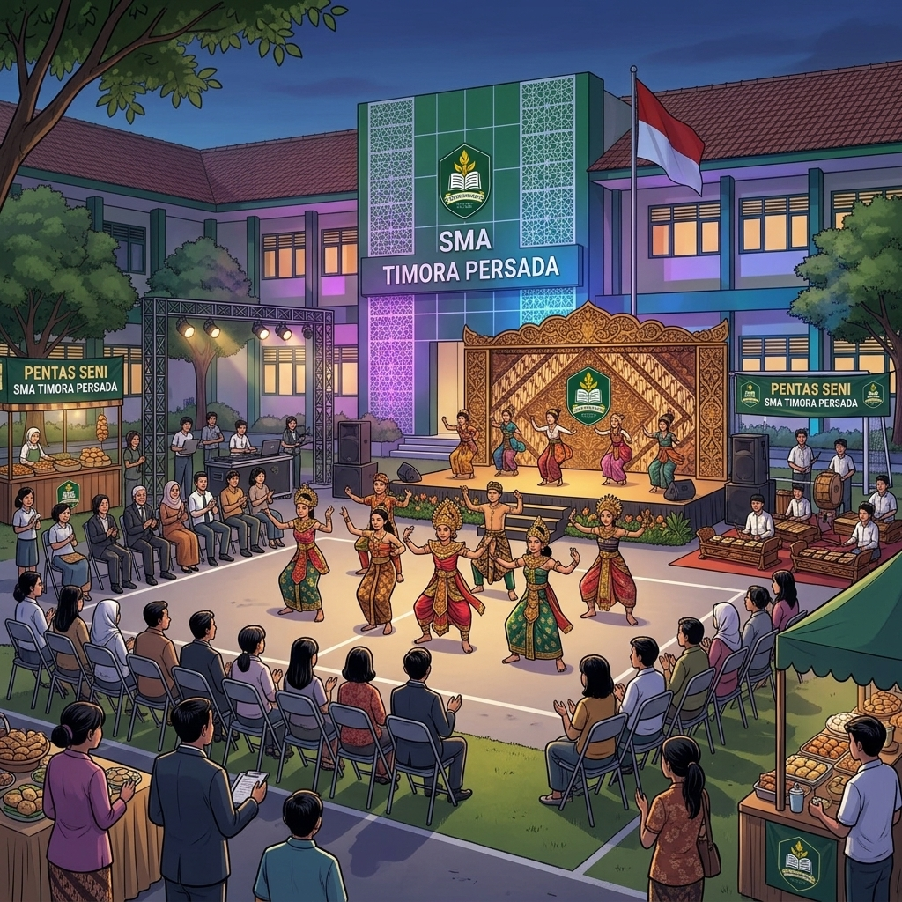

Kurikulum & Pembelajaran
Pembelajaran dirancang untuk mengembangkan pemahaman, kemampuan berpikir kritis, komunikasi, dan pemecahan masalah.
Informasi lebih lanjutSMA Timora Persada merupakan sekolah menengah atas fiktif yang berlokasi di Bandung, Jawa Barat. Kami mengusung lingkungan belajar yang ramah, disiplin, dan terbuka terhadap perkembangan ilmu pengetahuan. Melalui pembelajaran yang aktif serta kegiatan pengembangan diri, sekolah mendorong siswa menjadi pribadi yang mandiri, kreatif, dan bertanggung jawab.
Menjadi sekolah yang membentuk generasi berkarakter, berprestasi, kreatif, dan peduli terhadap lingkungan.
Kesempatan untuk belajar, mencoba hal baru, dan mengembangkan kemampuan.
Pembelajaran dirancang untuk mengembangkan pemahaman, kemampuan berpikir kritis, komunikasi, dan pemecahan masalah.
Informasi lebih lanjutSiswa dapat mengembangkan minat melalui kegiatan olahraga, seni, organisasi, sains, dan kepedulian lingkungan.
Lihat kegiatanSetiap proses dan pencapaian dihargai sebagai bagian dari perjalanan siswa untuk tumbuh dan menjadi lebih baik.
Baca kabar sekolahSusunan organisasi SMA Timora Persada yang bekerja sama untuk mendukung pembelajaran dan pelayanan sekolah.
Pimpinan dan penanggung jawab sekolah
Amanda Fitria, S.Pd.
Zhafrans Azura, S.Pd.
Zhafira Azhara, S.Pd.
Guru mata pelajaran dan wali kelas yang membimbing proses belajar siswa.
Mengelola administrasi, surat-menyurat, dan data sekolah.
Mendampingi perkembangan belajar, sosial, dan pribadi siswa.
Membantu menjaga fasilitas, kebersihan, keamanan, dan kenyamanan sekolah.
Informasi dan cerita kegiatan SMA Timora Persada.

10 Juli 2026
Siswa mengikuti kegiatan pengenalan lingkungan untuk mengenal budaya, ruang, dan kebiasaan positif di sekolah.
Baca Selengkapnya
18 Juli 2026
Kegiatan membaca dan diskusi menjadi ruang bagi siswa untuk bertukar ide dan memperluas pengetahuan.
Baca Selengkapnya
25 Juli 2026
Siswa berkolaborasi merawat tanaman dan menjaga kebersihan sebagai kebiasaan sederhana yang berdampak baik.
Baca SelengkapnyaPotongan kegiatan belajar dan bertumbuh bersama.


